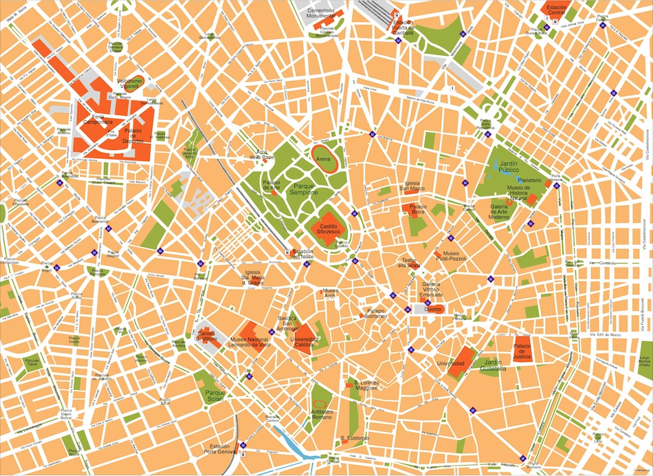

<!--
  Generated template for the TrajetJournalierPage page.

  See http://ionicframework.com/docs/components/#navigation for more info on
  Ionic pages and navigation.
-->
<ion-header>
  <ion-navbar>
    <ion-title>Trajet Journalier</ion-title>
  </ion-navbar>
</ion-header>


<ion-content>
  <div class="plan">
    
  </div>
  <ion-list class="list">
    <ion-item>
      <ion-input class="trajet depart" placeholder="Station de départ">
        <span> Station de départ</span>
      </ion-input>
    </ion-item>
    <ion-item>
      <ion-input class="trajet arrivee" placeholder="Station d'arrivée">
        <span>Station d'arrivée</span>
      </ion-input>
    </ion-item>
  </ion-list>
  <ion-row  text-center>
    <div col-4 class="infos"><i class="far fa-money-bill-alt"></i> 0,00€</div>
    <div col-4 class="infos"><i class="fas fa-user"></i> 1 <i class="fas fa-angle-down"></i></div>
    <div col-4 class="infos"><i class="far fa-credit-card"></i> 1234</div>
  </ion-row>
  <ion-row text-center>
    <div col-6 class="info"><i class="far fa-clock"></i> Temps estimé</div>
    <div col-6 class="info fav"><i class="fas fa-star"></i> FAVORIS</div>
  </ion-row>
</ion-content>
<ion-footer block>
  <button>
    ACHETER UN TICKET
  </button>
</ion-footer>
